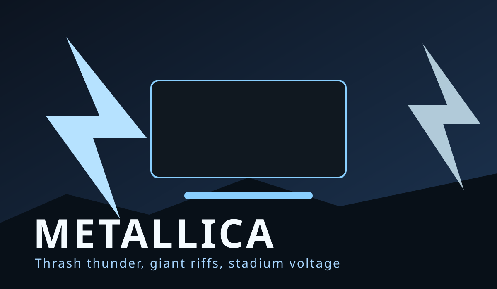
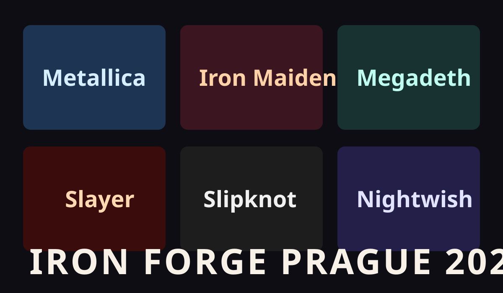
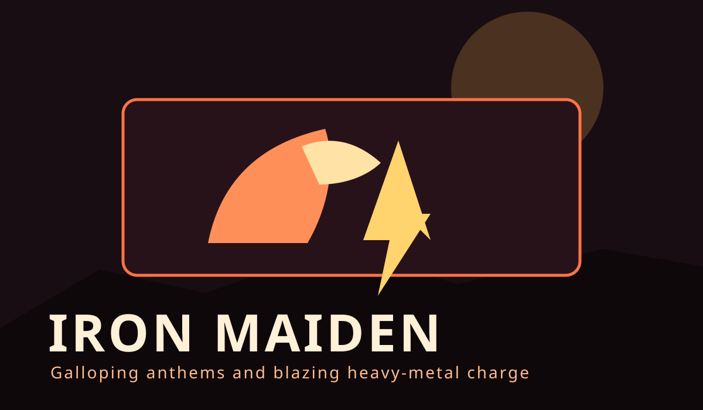
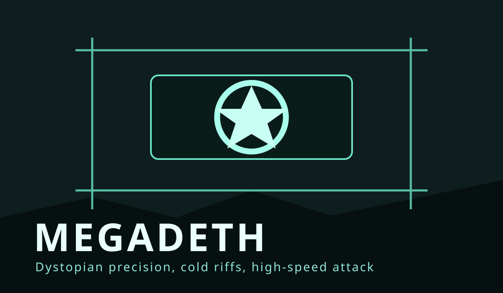
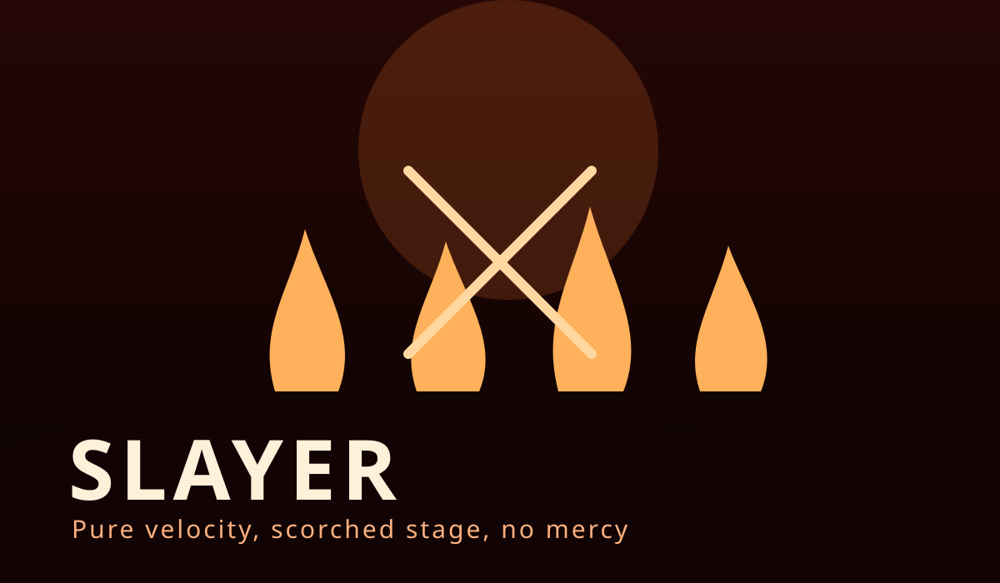
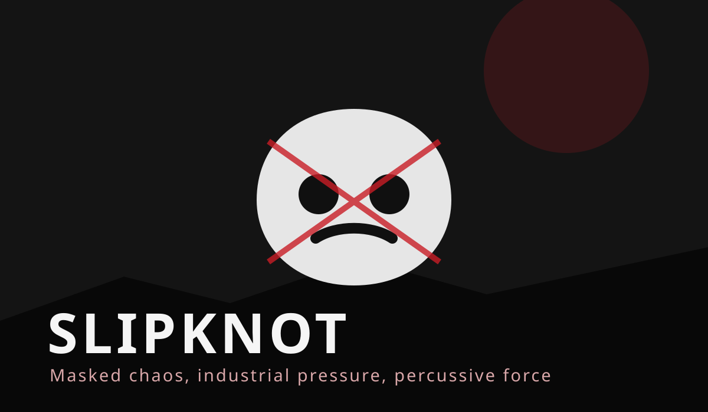
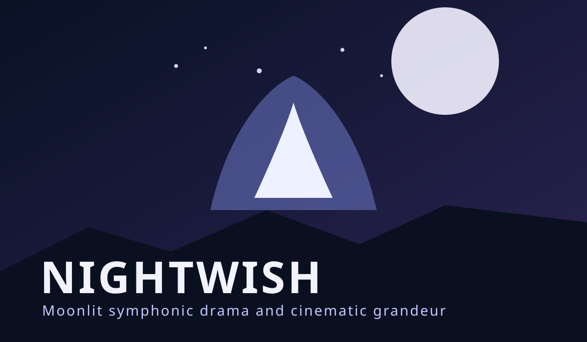

Line-up 60 kapel
Od heavy a thrash po symfonický a extrémní metal.

Seznam interpretů
- Metallica
- Iron Maiden
- Megadeth
- Slayer
- Slipknot
- Black Sabbath
- Judas Priest
- Pantera
- Tool
- Mastodon
- Lamb of God
- Gojira
- Opeth
- Dream Theater
- Nightwish
- Rammstein
- Sabaton
- Amon Amarth
- Arch Enemy
- In Flames
- Sepultura
- System of a Down
- Korn
- Deftones
- Avenged Sevenfold
- Trivium
- Killswitch Engage
- Parkway Drive
- Behemoth
- Dimmu Borgir
- Immortal
- Emperor
- Mayhem
- Darkthrone
- Cannibal Corpse
- Morbid Angel
- Death
- Carcass
- Napalm Death
- Meshuggah
- Within Temptation
- Epica
- Kreator
- Sodom
- Testament
- Exodus
- Anthrax
- Alice in Chains
- Ghost
- Powerwolf
- Helloween
- Blind Guardian
- Accept
- Saxon
- Dio
- Motörhead
- Whitesnake
- Scorpions
- Children of Bodom
- Devin Townsend
Detail účinkujících




